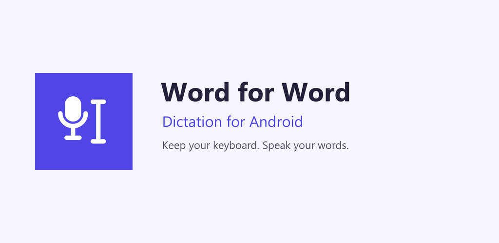

What it does
Tap Word for Word's floating microphone button, speak, and tap again. Your words appear at the cursor in the text box you are using, in any app. You keep the keyboard you already have.
- The microphone button appears while your keyboard is open.
- Set a key or key combination on a physical keyboard or keypad to start and stop recording.
- Pick a speech model and language through OpenRouter, or let the model detect the language.
- Verbatim mode keeps fillers, repeats and false starts. Turn it off for cleaned-up text.
- History keeps your transcriptions on your phone for 24 hours by default.
- Share an audio file to Word for Word to get its text.
- Yiddish speakers can try the developer's Yiddish speech model.
Free minutes
The Google Play version includes 30 free transcription minutes per phone each month. You can also enter your own OpenRouter API key to use your own account. Internet access is required.
Get it
Word for Word runs on Android 6 and newer. It is coming to Google Play. Builds are on GitHub releases.
Privacy
Read the privacy policy for what is sent where and what stays on your phone.
Contact
Email micromaxpro7@gmail.com, or open an issue at github.com/isaacweber613/whisper-verbatim/issues.